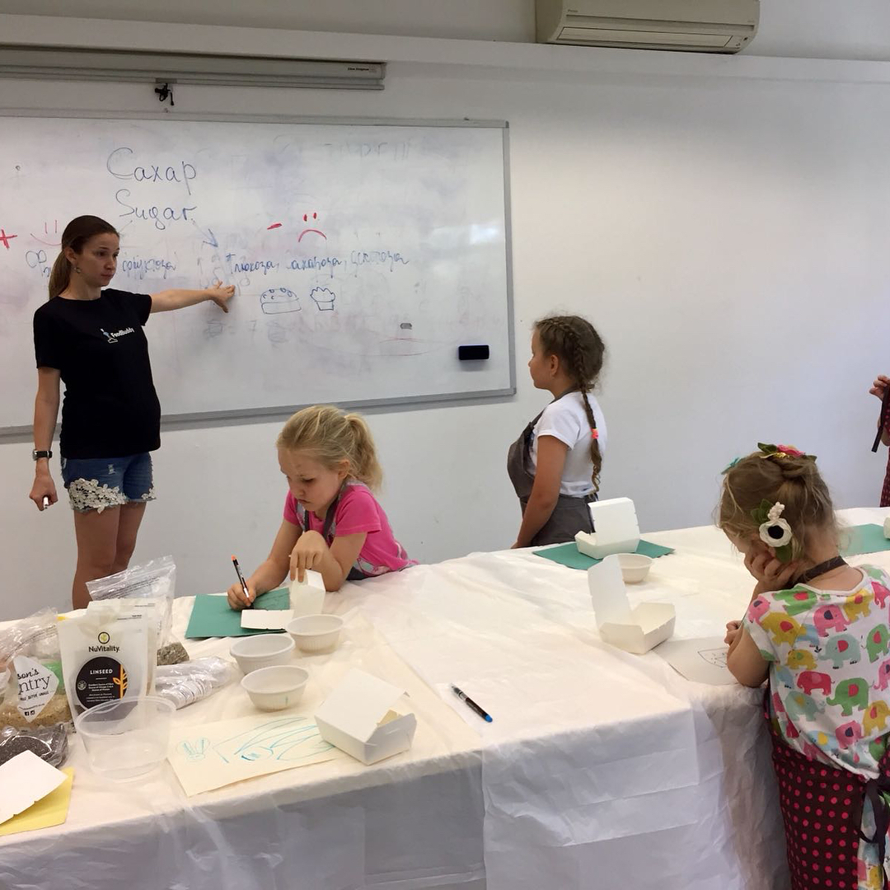

Had amazing time today! Taught how to cook healthy candies and explained the difference between good and bad sugar for these sweet little girls at @kitsingapore - first weekend school for bilingual kids in Singapore 😊 our candies were made of dried apricots, raisins, prunes, walnuts, chia, flax, sunflower, sesame, pumpkin seeds, oat bran, grated coconut, lemon juice, and a bit of water. What’s your favorite healthy candy? 😋😉 . . . . . Сегодня был чудесный день! Мне посчастливилось провести урок «полезные сладости» для очень сладких малышек в первой в Сингапуре билингвальной школе выходного дня @kitsingapore ! Мы приготовили здоровые конфеты состоящие из микса кураги, изюма, чернослива, семян чии, льна, подсолнуха, кунжута, тыквы, овеянных отрубей, грецкого ореха, кокосовой стружки, лимонного сока и немного воды. А какая у вас любимая здоровая конфета? 😋😉 . . . . . #healthyfood #healthysnacks #healthysweets #kitsingapore #cookingathome
2018-06-04 00:08:21
Back to main page